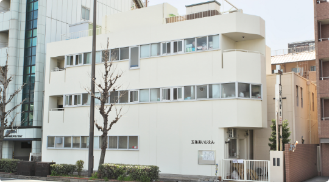
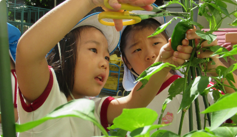
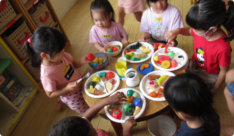
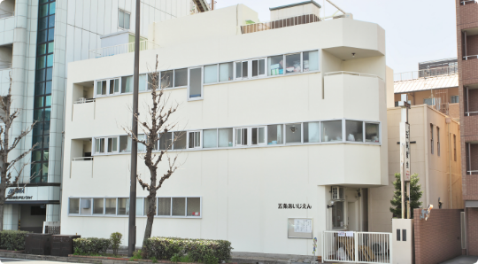

【最寄駅】
・JR嵯峨野線「丹波口駅」より徒歩5分
・阪急京都線「大宮駅」より徒歩10分
・京福嵐山線「四条大宮駅」より徒歩10分
【最寄バス停】
・京都市バス「五条壬生川」停留所正面
1950年、戦後の混乱した世情の中で、何はなくても子ども達の心に神様の心を持ってほしいというキリスト教的願いを込め、五条ナザレ教会を土台として愛児園は創立しました。 以来、神様に愛される全ての子どもを愛し、共に歩む保育を目指し、祈り求めてまいりました。 1971年には、社会福祉法人として認可され、教会の園から、社会的責任を担う園として、さらに乳児を加えた園として、成長と発展を遂げてまいりました。 子どもそして全ての人にとって大切なのは、神様がわたしたちを愛して下さるように、互いを必要とし認め合う心です。そのような関係こそが、本当の意味でこの世に求められる神様から与えられる光であると信じて疑いません。 この思いを、園児、保護者、保育者と一体となって照り輝かせる園として歩んでいきますので、どうか今後も相変わらぬご支援をよろしくお願い申し上げます。
園長 貝沼 強



【最寄駅】
・JR嵯峨野線「丹波口駅」より徒歩5分
・阪急京都線「大宮駅」より徒歩10分
・京福嵐山線「四条大宮駅」より徒歩10分
【最寄バス停】
・京都市バス「五条壬生川」停留所正面
ご見学やご相談、お問い合わせ、入園申込については随時、受付中です
（ご見学はお電話の上、日程をご確認ください）
075-351-3990